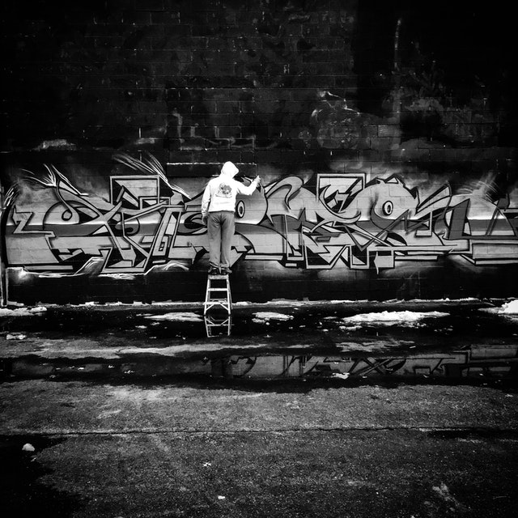

Alinhando Imagens
Use as classes de flutuação para flutuar a imagem para a esquerda ou para a direita:

Acesse o código fonte!
A classe .rounded adiciona cantos arredondados em uma imagem:
A classe .rounded-circle forma a imagem em um círculo:
A classe .img-thumbnail cria uma miniatura da imagem:
Use as classes de flutuação para flutuar a imagem para a esquerda ou para a direita:
Centralize uma imagem adicionando as classes de utilitário .mx-auto (margin: auto) e .d-block (display: block) à imagem:
A classe .img-fluid aumenta a escala da imagem para o elemento pai (redimensione a janela do navegador para ver o efeito):
